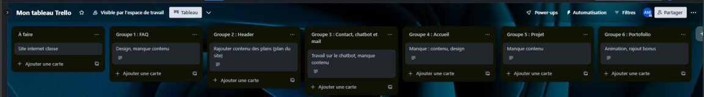
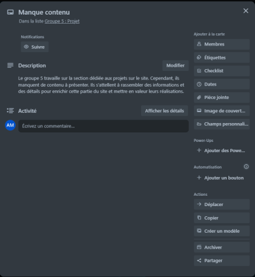

Présentation de 2 projets
Recencement informatique DBS 34
Dans le cadre de ma formation, j’ai participé à un projet de recensement des équipements informatiques pour l'entreprise Digital Bureautique Solution (DBS). Ce projet avait pour but d’identifier et de répertorier l’ensemble des actifs numériques de l’organisation, afin de faciliter la gestion du parc informatique et d’assurer la continuité des services.
Objectifs du projet
- Identifier et inventorier chaque équipement informatique (ordinateurs, imprimantes, périphériques).
- Assurer la conformité des installations avec les normes et référentiels utilisés par l’entreprise.
- Optimiser la gestion des droits d'accès pour renforcer la sécurité informatique.
Méthodologie et outils utilisés
Pour réaliser ce recensement, j’ai suivi une approche méthodique en utilisant des outils de gestion d’actifs informatiques, notamment un logiciel de diagnostic PC permettant de recueillir des informations détaillées pour un ordinateur, qui a permis de structurer et centraliser les informations de manière efficace.
- Identification et collecte des données : J’ai parcouru chaque unité de l’entreprise pour recenser les équipements informatiques. J’ai utilisé donc Userdiag pour créer une fiche descriptive pour chaque appareil, incluant le modèle, les numéros de série, l’emplacement physique et les utilisateurs principaux.
- Application des référentiels : Le projet a également impliqué l’utilisation de standards de gestion des actifs, afin de garantir que chaque ressource soit conforme aux bonnes pratiques de gestion et puisse être maintenue de manière optimale.
- Gestion des droits d'accès : Pour chaque équipement, j’ai analysé les utilisateurs associés et leurs niveaux d’habilitation. Les droits d'accès ont été vérifiés et ajustés selon les besoins fonctionnels et les règles de sécurité de l’entreprise.
Résultats et documentation
À l'issue du projet, j’ai produit un rapport détaillé incluant :
- Un inventaire exhaustif des actifs informatiques de DBS.
- Une analyse des éventuels manquements en matière de sécurité et des recommandations pour la mise en conformité.
- Des propositions pour optimiser les cycles de sauvegarde et les procédures de continuité de service.
Le rendu est disponible juste ici.
Trello
Voici le second projet que j'ai réalisé en cours, qui est basé sur le site de la classe qui est en construction en collaboration avec du coup toute la classe. Voici quelques images :


Gestion des demandes d’assistance en hotline
Dans le cadre de ma formation et de mon expérience en entreprise, j’ai été amené à intégrer la hotline d’assistance technique pour gérer les demandes des clients concernant les problèmes techniques et informatiques rencontrés sur leurs imprimantes et écrans multifonctions.
Objectifs du rôle en hotline
Mon rôle consistait principalement à :
- Collecter les informations nécessaires pour diagnostiquer la nature des incidents signalés par les clients.
- Suivre et orienter les demandes vers les équipes techniques si une intervention approfondie était nécessaire.
- Résoudre les problèmes courants en guidant les utilisateurs par téléphone pour les amener à rétablir le bon fonctionnement de leurs appareils.
Gestion des incidents : Imprimantes et écrans multifonctions
L’assistance portait sur des problèmes variés liés aux imprimantes et aux écrans multifonctions, tels que :
- Problèmes de connexion et d'installation : notamment pour l’ajout d’imprimantes sur un réseau ou la résolution de soucis de configuration.
- Dépannage des erreurs matérielles : comme des bourrages papier, des alertes de cartouche, ou des défaillances dans l’alimentation papier.
- Maintenance des logiciels embarqués : guidage des clients dans les mises à jour logicielles et les réinitialisations nécessaires.
Processus de résolution et méthodologie
- Prise en charge de la demande
- Identification de l’utilisateur et collecte des informations nécessaires : modèle de l’appareil, type de connexion, et description de l’incident rencontré.
- Évaluation initiale du problème : comprendre si l’origine du problème est matérielle ou logicielle en posant des questions précises.
- Diagnostic et résolution à distance
- En cas de problème simple (comme des erreurs de connexion ou de bourrage papier), j'ai pu guider l’utilisateur étape par étape pour résoudre l’incident.
- Pour les problèmes de configuration réseau ou les erreurs de connexion, je les aidais à vérifier les paramètres réseau et à restaurer les paramètres par défaut, si nécessaire.
- Lorsqu’un problème logiciel se posait sur les écrans multifonctions (notamment en cas de blocage ou de lenteurs), je les assistais dans la réinitialisation de l’appareil ou le chargement des mises à jour disponibles.
- Suivi et documentation des demandes
- Après la résolution de chaque incident, je complétais un rapport d’intervention documentant le problème et les étapes de résolution.
- En cas de besoin d’escalade, je me déplace chez le client avec le matériel nécessaire pour le dépanner
Compétences et outils utilisés
Grâce à cette expérience, j’ai développé :
- Une méthodologie de diagnostic rapide pour identifier la nature des incidents, en utilisant les étapes de résolution les plus efficaces pour chaque type de problème.
- Des compétences en communication pour expliquer clairement chaque étape aux utilisateurs, en s’adaptant à leur niveau de connaissance technique.
- Une maîtrise des outils de gestion de tickets, permettant de suivre chaque incident jusqu’à sa résolution complète et de garder une traçabilité de toutes les interventions effectuées.
Conclusion et apport personnel
Cette expérience m’a permis de consolider mes compétences en gestion d’incidents et en support technique. Elle a également renforcé mes aptitudes en communication et en résolution de problèmes, essentielles pour garantir la satisfaction des utilisateurs et la continuité des services.